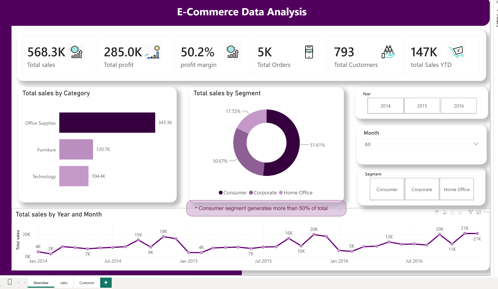

← HOMEE-COMMERCE SALES &
E-COMMERCE SALES &
CUSTOMER ANALYSIS
POWER BI | DAX | POWER QUERY | DATA MODELING
Analyzed three years of sales and customer data in Power BI to uncover trends, customer behavior, and profitability. Built an interactive dashboard with key business KPIs, customer segmentation, time-based analysis, and a structured data model to support data-driven decision-making.
KEY INSIGHT
The Consumer segment generated over 50% of total sales, making it the strongest contributor among customer segments.
